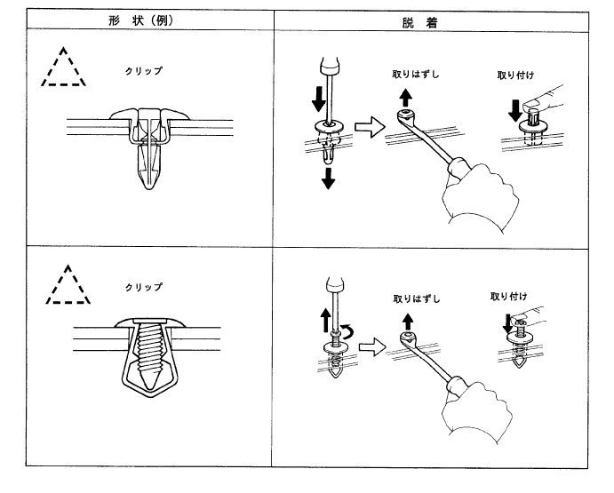

Gutting work

| 1 | Grooming |
|
| 2 | Vehicle protection |
|
| 3 | Safety work |
|
| 4 | Preparation of tools and instruments |
|
| 5 | Detached / decomposed / assembled work |
|
| 6 | Removal parts |
|
Pre -coat bolt
The pre -coat bolt is a bolt in which a seal lock agent is applied to the screw.
When tightening, loosening, or moving the pre -coat bolts, use the specified adhesive to pre -coat.
- ■ Attention ■
- The torque check is performed at the lower limit of the tightening torque allowed range.
When reusing pre -coat parts, remove the old bolt and screw hole -holes, dry down with white gasoline, etc., dry with compressed air, then apply the specified seal locking agent to the bolt screw and tighten with a specified torque.。
Depending on the seal lock agent to be applied, it may be necessary to leave the specified time until it is cured.
gasket
Use a seal agent to prevent leakage as necessary.
Bolt, nuts and screws
Bolts, nuts, and screws check the tightening torque and always use a torque wrench.
Fuse exchange
To replace the fuse, use the same capacity fuse.When using a different capacity fuse, use a fuse with a lower capacity lower than the specified amper.
clip
The figure shows the general clip removal guidelines for body parts.
- □ Participation □
- If the clip is damaged during work, be sure to replace it with a new clip.
- The ▲ mark in the illustration shows the clip, and the ○ mark shows the claws.

Jack -up of vehicles, jack down and support
Make sure to jack up, jack down, and keep your precautions when supporting.(See the section on the support position of the jack, rigid lack and lift)
Vacuum Horse removal and installation
If you want to pull out the vacuum hose, pull it with the end, not the center of the hose.
If you want to remove the vacuum hose, use the tag to know where to connect.
If you use a vacuum gauge, if the connector is too large, do not connect the hose.Use a slightly smaller adapter for adjustment.Once the hose grows, an air leak may occur.
Tightening when using an extended tool on a torque wrench
When combining SST or tools with a torque wrench, extending the overall length and tightening, the actual tightening torque becomes excessive by tightening the torque wrench to the value of the specified tightening torque.
In the text, only the specified tightening torque is described.When using SST and extension tools, the readings of the torque wrench are calculated by the calculation formula.
Calculation T '= T × L2/(L1+L2)
T ' Reading of torque wrench [n · m {KGF · cm}] T Provided tightening torque [n · m {kgf {cm}] L1 SST or tool length [cm] L2 Torque wrench length [cm]